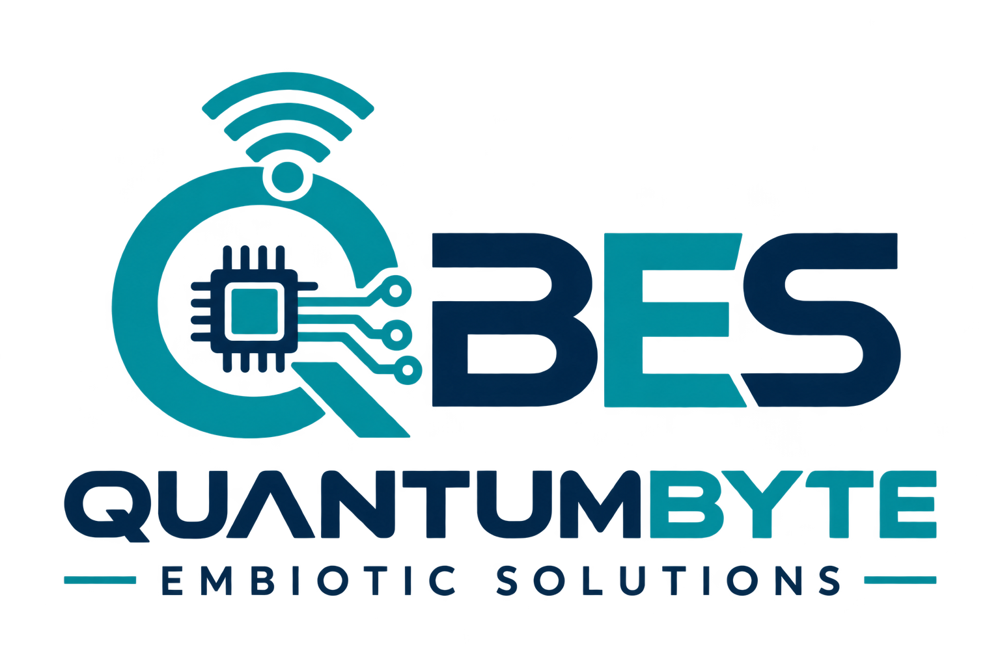
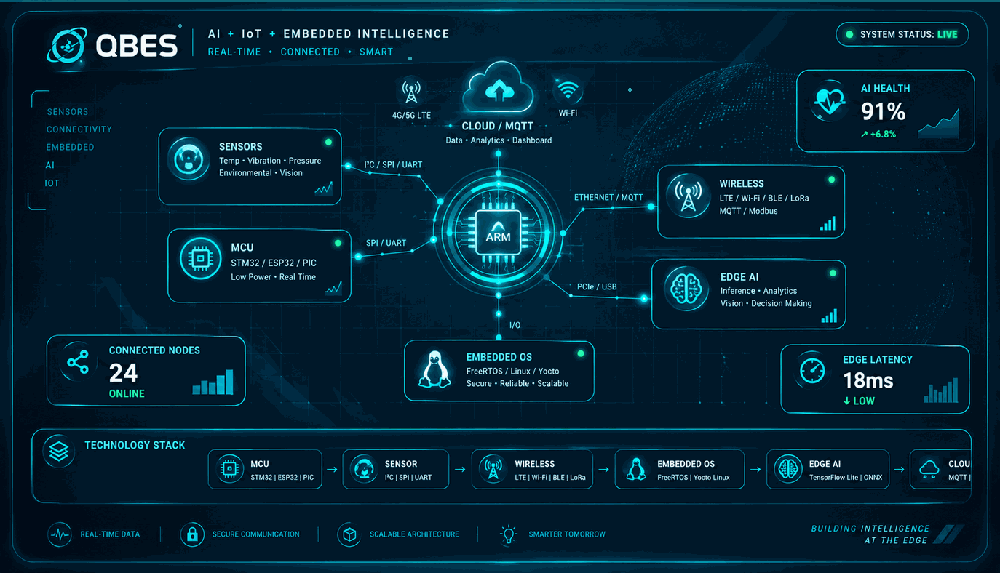

01 ACTIVE
Embedded Firmware
Drivers, peripherals, FreeRTOS tasks, bootloaders, state machines, diagnostics and OTA-ready firmware.

QUANTUMBYTEQuantumbyte Embiotic Solutions (QBES) designs embedded electronics, connected devices, industrial monitoring systems and AI-enabled inspection solutions from architecture through prototype and productization.

QBES is a technology-focused engineering company building practical embedded systems, IoT products, industrial monitoring and intelligent automation solutions.
We work across MCU firmware, RTOS, Embedded Linux, sensor interfaces, communications, industrial protocols, cloud-facing devices and edge AI. Our goal is to turn engineering concepts into serviceable, testable and scalable products.
Six engineering disciplines support the QBES product roadmap — connected by one AI + IoT engineering workflow.
Drivers, peripherals, FreeRTOS tasks, bootloaders, state machines, diagnostics and OTA-ready firmware.
Yocto Linux, board bring-up, system services, IPC, device integration and application deployment.
Wi-Fi, BLE, Ethernet, LTE, MQTT, device provisioning, telemetry and cloud-facing architectures.
Vibration, temperature, current, RS485/Modbus and sensor-fusion architectures for real-world assets.
MCU-to-sensor interfaces, displays, power/control modules, debugging and system-level bring-up.
Signal processing, anomaly detection, edge AI and data pipelines designed around measurable product value.
We combine embedded hardware, IoT connectivity and edge intelligence so physical systems can become measurable, connected and increasingly autonomous.
Vibration, temperature, current, vision, water and environmental signals.
Real-world dataWi-Fi, BLE, LTE, Ethernet, RS485/Modbus and secure device telemetry.
Always connectedEdge AI, anomaly detection, computer vision and machine-health intelligence.
AI at the edgeAlerts, dashboards, automation outputs and recommendations that drive action.
Decisions that matterModular systems designed for practical deployment, serviceability and future expansion.
Selected QBES documents that explain our engineering approach, embedded capabilities and product concepts.
Capabilities across firmware, RTOS, Embedded Linux, IoT, industrial protocols and debugging.
Open publication →Project-oriented engineering examples and product development context.
Open publication →Healthcare-oriented embedded product concept and engineering direction.
Open publication →Start with the engineering problem. We can shape the architecture, prototype path, electronics, firmware and connected product direction.
Quantumbyte Embiotic Solutions
Noida, Uttar Pradesh, India